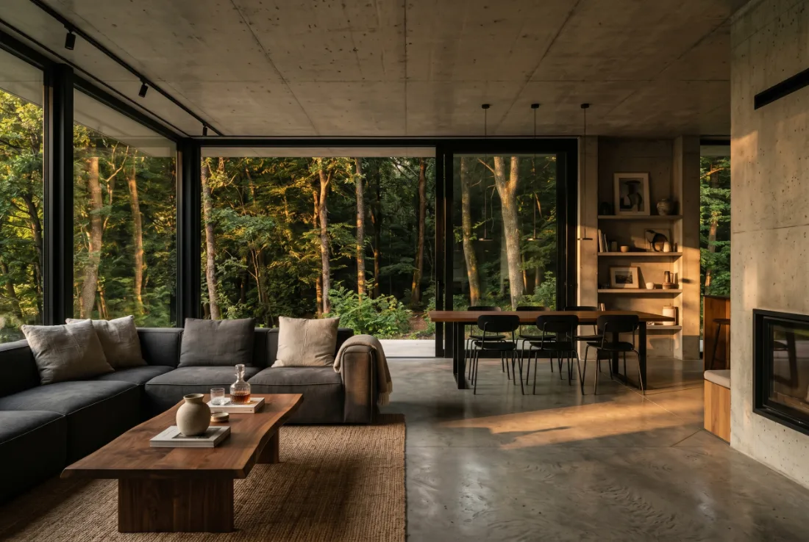
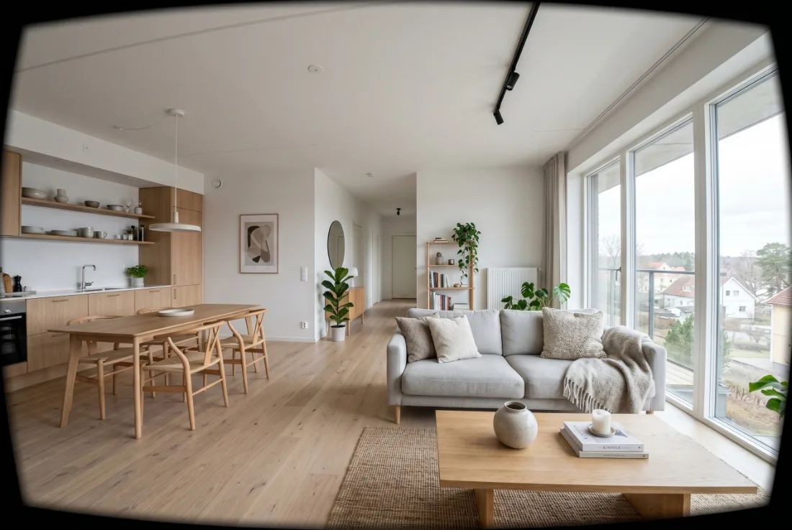

How to write alt text for architecture portfolio images.
Architecture portfolio alt text examples for exteriors, interiors, floor plans and project galleries. Image SEO and accessibility checklist for studios.
Read guideAtmosferi° / Field notes
Practical knowledge for architects, studios and developers. From your first website brief to the final architectural image.
160 articles across four disciplines. Every guide is linked below.Find the topic that matches your next decision.
Portfolios, CMS, accessibility, SEO and the systems behind architecture websites.

Briefs, renders, animations, image accuracy and visual storytelling.

Residential project websites, floor plans, apartment data and buyer journeys.

Drawing-led coordination checks for architectural images and built details.
Portfolios, CMS, accessibility, SEO and the systems behind architecture websites.
Architecture portfolio alt text examples for exteriors, interiors, floor plans and project galleries. Image SEO and accessibility checklist for studios.
Read guideWhat drives the cost of an architecture studio website? Compare portfolio, practice and development scope, CMS needs, content preparation and ongoing costs.
Read guideA practical website brief template for architecture studios: define goals, portfolio scope, CMS, images, languages, launch requirements and comparable quotes.
Read guideA practical architecture portfolio case study template: show the brief, design decisions, drawings, project status and a clear next step for clients.
Read guideHow to structure an architecture studio services page: explain project fit, design stages, evidence, scope boundaries and a useful enquiry path.
Read guideJak připravit zadání nového webu pro architektonický ateliér? Praktický vzor, seznam podkladů, odpovědnosti, rozsah CMS a kontrolní seznam pro nabídku.
Read guideJak naplánovat redesign webu architektonického ateliéru? Audit starých projektů, přesměrování, nové portfolio, mobilní UX, CMS a kontrola po spuštění.
Read guideKosten und Leistungsumfang einer Architekturwebsite verstehen: Portfolio, CMS, Projektbilder, Mehrsprachigkeit, Relaunch, laufende Kosten und Angebotsvergleich.
Read guideCo napsat na stránku O nás architektonického ateliéru? Praktický postup pro tým, autorství, zkušenosti, přístup k návrhu a důvěryhodný první kontakt.
Read guideCheck JSON-LD on architecture project pages without inventing project facts, confusing authorship or promising Google rich results.
Read guideEine neue Website für Ihr Architekturbüro anfragen? Checkliste für Ziele, Projektmaterial, Inhalte, CMS, Zuständigkeiten und vergleichbare Webdesign-Angebote.
Read guideA release checklist for architectural films on studio and development websites: playback controls, captions, reduced motion, mobile performance and fallback content.
Read guideHow architecture studios can organise project types, status and filters without empty categories, misleading labels or inaccessible portfolio navigation.
Read guideA practical guide to architecture practice careers pages: role clarity, portfolio submissions, applicant privacy, accessibility, job expiry and publishing QA.
Read guideA practical launch and maintenance checklist for architecture studio contact forms: email delivery, spam controls, privacy, accessibility and failure recovery.
Read guideA practical guide to publishing project-location maps on architecture websites without surprise third-party requests, inaccessible controls or misleading addresses.
Read guidePraktický návod pro architekty: rozlište kliknutí, skutečné poptávky a vhodné zakázky. Měřte SEO, formuláře a e-maily bez přikrášlování výsledků.
Read guideA release workflow for architects publishing confidential or embargoed projects: approval scope, address privacy, metadata, previews, launch timing and withdrawal.
Read guideHow architecture studios can publish accessible downloadable project PDFs: reading order, tagged plans, alt text, links, file size and mobile QA.
Read guideA practical sign-off workflow for architecture portfolio credits: identify design roles, resolve collaborator disputes, document image permissions and approve project pages.
Read guideA practical QA workflow for multilingual architecture studio websites: translated project records, missing locales, canonicals, hreflang and mobile navigation.
Read guideMoving an architecture studio website? Map project URLs, preserve portfolio links, test 301 redirects, canonicals, image files and the live launch.
Read guideHow to publish large architectural photographs and 3D renders without a slow portfolio: responsive exports, crop decisions, image priority and mobile QA.
Read guideWie Architekturbüros Leistungsphasen, Beratung und Fachleistungen verständlich darstellen: Seitenstruktur, konkrete Beispiele, Kontaktwege und SEO.
Read guideCMS for architects: compare static, conventional and headless systems for projects, image workflows, multilingual editing and reliable handover.
Read guideA practical guide to selecting photographs, drawings, visualisations and project information for an architecture portfolio.
Read guidePraktický návod na navigaci, portfolio, projektové stránky a prezentaci služeb architektonického ateliéru.
Read guideEn praktisk guide til tilgjengelige arkitektnettsider: alt-tekst til prosjektbilder, lesbare plantegninger, kontrast, tastaturbruk og mobilvisning.
Read guideArchitekturwebsite erneuern, ohne Projekte und Auffindbarkeit zu verlieren: Inhaltsinventur, Weiterleitungen, Bilder, mehrsprachige Seiten und Launch-Checks.
Read guideBriefs, renders, animations, image accuracy and visual storytelling.
Choose useful architectural rendering views with this practical camera-angle checklist: eye height, perspective, context, crops and an approvable shot schedule.
Read guideKolik stojí web architektonického ateliéru? Přehled skutečných výchozích cen Atmosferi, obsahu, CMS, vizualizací, redesignu a nákladů na správu.
Read guideA practical uncertainty register for architectural renderings: identify unconfirmed geometry, finishes, context and assumptions before images reach clients or the public.
Read guideNemáte 3D model stavby? Zjistěte, kdy lze připravit vizualizaci z půdorysů, řezů a fotografií, co dodat a jak ověřit rozměry, materiály i zadání.
Read guideA drawing-led checklist for reviewing lift lobby renderings: landing doors, thresholds, call panels, clearances, lighting and unresolved coordination.
Read guideBuild a traceable architectural visualisation pack for planning review: viewpoints, source drawings, version control, disclosure and approval records.
Read guideA practical review guide for architects visualising playgrounds: equipment zones, fall surfaces, access, planting, supervision and unverified safety claims.
Read guideA practical digital colour review workflow for architectural renderings: sRGB exports, display differences, browser checks, approval records and escalation.
Read guideA practical approval workflow for architectural renderings edited with AI or retouching: record sources, distinguish design facts from invention, and track revisions.
Read guideA practical handover checklist for architects: final image formats, layered files, 3D source models, licensing questions, version control and archive responsibilities.
Read guideA practical checklist for architects preparing competition renderings: anonymity, visual consistency, board crops, technical rules and final-file checks.
Read guideA practical architectural rendering tender guide: compare view scope, model inputs, review stages, file handover, rights and exclusions.
Read guideHow to review steps, ramps, entrances and accessible circulation in architectural visualisations without mistaking a persuasive image for compliance evidence.
Read guideA practical material approval workflow for architectural renderings: sample provenance, texture scale, gloss, lighting, mock-ups and sign-off evidence.
Read guideA controlled visual comparison method for architects: match cameras, light, context and finishes, document differences and review alternatives fairly.
Read guidePrepare architectural renderings for brochures, sales suites and site hoardings: calculate pixels, plan crops, manage colour and check print files.
Read guideA practical viewpoint and evidence checklist for architects reviewing overlooking, balconies, screening and privacy in proposed developments.
Read guideA practical night-rendering review for architects: distinguish lighting intent from measured illuminance, check spill, glare, neighbours and exposure.
Read guidePlan an architectural animation with a useful shot list, camera rules, design-status checks, review gates, sound rights and web-ready deliverables.
Read guideA practical sun-and-shadow brief for architectural CGI: verify north, location, date, time zone, context geometry and what a rendering can honestly prove.
Read guideA practical landscape CGI checklist for architects: existing trees, planting schedules, mature size, season, ground levels, shadows and approval.
Read guideHow to review architectural renderings: clear annotated comments, decision owners, design changes, revision stages and final approval checklist.
Read guideA practical BIM and CAD handover checklist for architectural renders: choose file formats, check units and origins, package references, define cameras and control revisions.
Read guideA change-control checklist for developers: track revised designs, audit published architectural renderings, approve replacements and update every sales channel.
Read guideA practical guide to matching proposed buildings to site photographs: viewpoints, camera data, survey alignment, occlusion, lighting and approval checks.
Read guideA practical QA checklist for architectural 360° tours: panorama quality, hotspots, mobile scrolling, keyboard controls, loading, disclosures and handover.
Read guideResidential project websites, floor plans, apartment data and buyer journeys.
A release checklist for apartment floor plans on development websites: unit IDs, areas, drawing revisions, approvals, accessible files and updates.
Read guideInteractive site plans for real estate developments: compare 2D and 3D maps, building navigation, quote scope, accessible UX and verified unit data.
Read guideHow to keep apartment availability accurate on a property development website: status definitions, update ownership, stale-data fallbacks, QA and enquiry handoff.
Read guideHow developers can preserve apartment IDs, buyer consent and sales context when enquiries pass from a property website to a CRM or sales team.
Read guideHow to check views from unbuilt apartments: floor elevations, eye positions, window geometry, obstructions, evidence labels and marketing approvals.
Read guideA practical guide to depicting construction phases accurately in architectural renderings, from occupied buildings and temporary works to future phases.
Read guideA practical guide to architecture project consultation websites: explain proposals, publish versioned drawings, collect feedback and report what changed.
Read guideWhat should a residential development website show before sales launch? A practical checklist for project imagery, floor plans, status, availability and enquiries.
Read guideShould your residential development website use an interactive floor plan? Compare simpler alternatives, unit data, accessibility, mobile layouts and live availability.
Read guideDrawing-led coordination checks for architectural images and built details.
Review exposed cross-laminated timber in architectural CGI: panel grids, joints, grain, openings, services, finish and unresolved fire or acoustic details.
Read guideReview operable acoustic partition walls in interior CGI: ceiling tracks, panel stacking, door modules, floor interfaces and open-versus-closed room layouts.
Read guideA visual QA workflow for auditorium projection screens: screen positions, viewing obstructions, AV equipment, lighting states and honest design assumptions.
Read guideA practical visual QA guide for raised access floor panel grids, perimeter cuts, thresholds, access lids and furniture coordination in office renderings.
Read guideCheck rammed-earth walls in architectural CGI: lift lines, texture scale, openings, edges, weather protection and design-stage uncertainty.
Read guideA visual QA guide for retractable auditorium seating: extended and stored layouts, aisle geometry, sightlines, floor interfaces and coordinated room uses.
Read guideA practical visual QA guide to revolving entrance door geometry, wing positions, facade interfaces, adjacent access and truthful presentation images.
Read guideA visual QA guide to stage curtain tracks, masking legs, borders, storage, sightlines and lighting in auditorium interior renderings.
Read guideA drawing-led checklist for reviewing brick weep openings and cavity drainage details in facade renderings without implying technical compliance.
Read guideA source-led review of curtain wall spandrel panels in architectural renderings: opaque zones, glass colour, mullion alignment, reflections and approvals.
Read guideReview perforated metal facade screens in architectural CGI: open-area pattern, scale, moiré, backlighting, fixings, edges and approvals.
Read guideA source-led checklist for showing window trickle vents accurately in architectural facade renderings without inventing ventilation performance or approvals.
Read guideA drawing-led checklist for representing atrium smoke curtains, headboxes, drop zones, lighting and open-space interfaces in architectural CGI.
Read guideA practical visual review of substation enclosure access, ventilation, doors, levels, screening and site interfaces before architectural images are published.
Read guideA drawing-led visual QA guide to external escape stair geometry, landings, guarding, doors and facade interfaces without claiming fire-safety approval.
Read guideA practical review of living-wall facade support, planting coverage, irrigation access and seasonal assumptions in architectural visualisations.
Read guideA visual QA guide to roof lightning protection air terminals, conductors, supports and interfaces without implying technical certification.
Read guideA source-led visual review for solar carport renders: canopy geometry, PV modules, parking clearance, drainage, lighting and pedestrian access.
Read guideReview recessed entrance mats in architectural CGI: floor levels, edge trims, door clearances, drainage assumptions and maintenance access.
Read guideA practical visual QA guide to exterior stair falls, landings, drain positions, nosing details and material transitions in architectural CGI.
Read guideA visual QA guide for sliding entrance door openings, tracks, sensors, glazing and operating states, without confusing CGI with safety approval.
Read guideA source-led visual QA guide to garage clear heights, overhead services, clearance signs and vehicle routes in architectural CGI.
Read guideA practical visual QA guide to bollard locations, vehicle impact protection, access conflicts, finishes and unresolved specifications in architectural CGI.
Read guideA drawing-led checklist for acoustic wall panel modules, joints, edges, doors, sockets and lighting coordination in interior architectural visualisations.
Read guideReview balcony privacy screen height, opacity, fixing, sightlines and neighbour views in architectural renderings without implying planning or safety approval.
Read guideA practical review of manifestation markings on glazed partitions and doors in interior CGI: pane IDs, contrast, film finishes, artwork and approvals.
Read guideCheck roller shutter head boxes, guide rails, recess depths and operating positions in architectural CGI without inventing envelope details.
Read guideA practical interior CGI review of structural movement joint covers across floors, walls and ceilings: continuity, clearances, finishes and approval.
Read guideA drawing-led checklist for floor-box positions, furniture conflicts, cable access and floor finishes in office architectural visualisations.
Read guideA drawing-led review of recessed LED channels, diffuser continuity, ceiling junctions, light output and maintenance access in architectural CGI.
Read guideA drawing-led checklist for smoke detector types, ceiling placement, lighting clashes and post-production accuracy in architectural interior renderings.
Read guideA practical visualisation checklist for trench-convector grilles, floor setting-out, glazing interfaces, furniture conflicts and drawing-led approval.
Read guideReview window sill projection, drip edges, end caps and facade junctions in architectural CGI without implying unverified weatherproofing.
Read guideA drawing-led review of visible fire-door closers, hold-open devices, swing clearances and hardware coordination in architectural interior CGI.
Read guideA source-led checklist for locating supply and extract terminals, ceiling coordination, joinery clashes and truthful HVAC details in interior CGI.
Read guideReview kitchen extractor routes, ceiling bulkheads, maintenance access and facade outlets before approving interior architectural renderings.
Read guideA drawing-led review of kitchen island outlets, service routes, appliance access and visible details before architectural interior CGI is approved.
Read guideReview recessed curtain pockets, track setbacks, fabric layers and ceiling clashes before approving architectural interior renderings.
Read guideReview roof access hatch placement, upstands, opening clearance and roofscape visibility in architectural renderings without inventing safety approvals.
Read guideA practical review of roof terrace pedestal paving: finished levels, open joints, edge cuts, supports and drainage in architectural visualisations.
Read guideReview shower linear drains, floor falls, tile setting-out and thresholds in architectural interior renderings without inventing construction details.
Read guideCheck skirting profiles, recessed shadow gaps, wall finishes and corners against coordinated interior details before approving architectural CGI.
Read guideA practical visual review of stair handrail starts, returns, wall brackets and landing transitions against coordinated architectural drawings.
Read guideCheck manifold cabinet locations, access clearances, skirtings and floor-heating interfaces before approving interior architectural CGI.
Read guideCheck ceiling access hatches against reflected ceiling plans, maintenance zones, finishes and lighting before approving interior CGI.
Read guideReview floor finish boundaries, levels, door thresholds and transition profiles in architectural interior CGI before design approval.
Read guideA practical architectural CGI review for roof overflow openings, parapet penetrations, drainage routes and unresolved waterproofing details.
Read guideA drawing-led review of sprinkler head positions, ceiling coordination, visibility and unresolved fire-protection details in interior CGI.
Read guideA practical visual review of window recesses, insulation build-ups, sills and shading when facade thickness changes during design.
Read guideA source-led checklist for checking interior door swings, handles, hinges, closers and clearances in architectural CGI before publication.
Read guideA drawing-led visual review for accessible parking bays, transfer zones, kerbs, pedestrian routes and signage in architectural renderings, without claiming compliance.
Read guideA practical drawing-led review of accessible restroom renderings: fixture positions, transfer space, door swings, mirrors and unresolved design details.
Read guideA source-led checklist for showing tactile paving, crossings, stairs and platform edges accurately in architectural visualisations without claiming accessibility compliance.
Read guideA practical review for showing retained trees, root protection areas, temporary fencing and construction access in architectural visuals without implying arboricultural approval.
Read guideA visual coordination checklist for parapet coping, joints, corners, slopes and roof-edge junctions before architectural images are approved.
Read guideA practical visual review of entrance intercoms, card readers and access-control hardware in residential CGI, including mounting, lighting and design assumptions.
Read guideA visual coordination checklist for facade intake and exhaust grilles: placement, scale, louvre geometry, stains, lighting and drawing revisions.
Read guideReview rooflight placement, glazing, upstands, flashing and daylight in architectural CGI without confusing an attractive image with technical approval.
Read guideA practical checklist for basement lightwell CGI: verify geometry, daylight portrayal, retaining walls, drainage, grilles and landscape assumptions.
Read guideCheck entrance canopy projection, drainage, structure, headroom and lighting in architectural CGI before approval, without implying technical compliance.
Read guideA drawing-led guide to showing temporary construction hoarding, public routes, gates, signage and phasing accurately in architectural CGI.
Read guideA practical visual review of loading bays, delivery vehicle access, dock geometry, pedestrian conflicts and provisional logistics details in architectural CGI.
Read guideReview outdoor air-source heat pump units in residential CGI: location, airflow, access, screening, condensate and honest design assumptions.
Read guideReview parcel lockers, mailrooms, delivery access and resident circulation in architectural CGI without inventing operational or accessibility compliance.
Read guideReview permeable paving CGI accurately: block joints, levels, drainage interfaces, service covers and realistic claims about infiltration.
Read guideA practical review workflow for brick bonds, course heights, openings, corners and mortar joints in architectural visualisations.
Read guideA practical review method for mirrors in interior visualisations: reflected geometry, sightlines, lighting, privacy, camera position and approval evidence.
Read guideA source-led review of stair counts, risers, treads, landings and perspective in architectural renderings, without implying code compliance.
Read guideA practical review guide for timber cladding board direction, widths, joints, corners and openings in architectural renderings.
Read guideReview balcony falls, drains, door thresholds and waterproofing interfaces in architectural renderings without confusing visual coordination with technical approval.
Read guideA practical visual review of cycle storage layouts, rack spacing, doors, access routes and overlooked conflicts in residential architectural renderings.
Read guideA practical checklist for depicting extensive and intensive green roofs accurately: planting depth, edges, drains, access paths and seasonal appearance.
Read guideHow to show bird-collision deterrent patterns on glass in architectural renderings without inventing performance claims or hiding facade design.
Read guideA practical review for architects of mixed daylight and electric light in interior renderings: exposure, colour balance, fixtures, window views and sign-off.
Read guideReview fire-service access routes, turning areas, gates and operational clearances in architectural CGI without implying technical approval.
Read guideA source-led checklist for showing casements, tilt-turn windows, restrictors and opening clearances accurately in architectural renderings.
Read guideA practical review of solar-panel placement, roof geometry, reflections and visibility in architectural renderings without claiming energy performance.
Read guideA practical review of snow-retention rails, roof edges and winter scenes in architectural visualisations, without implying engineering approval.
Read guideHow to depict rain gardens and bioswales faithfully in architectural images: grading, inlets, overflow, planting, dry-weather appearance and review evidence.
Read guideA source-led review of basement parking ramps, gradients, headroom, drainage, gates and street interfaces in architectural visualisations.
Read guideHow architects can review noise-screen geometry, plant enclosures, visibility and assumptions in renderings without claiming unverified acoustic performance.
Read guideA practical review of boundary lines, fence heights, gates and neighbouring context in architectural visualisations, with a source register and fictional example.
Read guideHow architects can review facade movement joints, panel breaks and sealant lines in renderings without disguising unresolved construction details.
Read guideHow architects can check furniture scale, circulation clearances and camera distortion in unbuilt interior renderings before publishing or approving them.
Read guideA practical review method for architectural visualisations of renovations: distinguish retained, removed, repaired and proposed building elements without misleading viewers.
Read guideA practical review of balcony guardrail height, spacing, glass, fixings and sightlines in architectural images without implying regulatory compliance.
Read guideA practical review of bin stores, collection routes and service access in architectural visualisations, without hiding operational constraints or claiming compliance.
Read guideA source-led checklist for EV charging bay layouts, chargers, cables, bollards, routes and signage in architectural visualisations without implying electrical approval.
Read guideA source-led checklist for modelling external sun-shading fins and louvers: angle, depth, supports, shadows, maintenance and design approvals.
Read guideA source-led checklist for showing facade cleaning access, roof anchors, tracks and maintenance zones accurately in architectural visualisations.
Read guideAn evidence-led review of flood-resilient architecture in renderings: thresholds, drainage landscapes, levels, access and scenario captions.
Read guideA practical facade-visualisation checklist for glass reflections, transparency, spandrel zones, mullions and honest material approvals.
Read guideA practical visualisation review for rooftop HVAC plant, lift overruns and screening: check visibility, height, sightlines and unresolved technical details.
Read guideA practical review of terrain levels, retaining walls, steps and ground transitions in architectural visualisations, with a source-led checklist.
Read guideA practical review checklist for accurate sign placement, legibility, hierarchy and wayfinding in architectural visualisations.
Read guideA practical review of rainwater pipes, gutters, outlets and drainage interfaces in architectural visualisations, without disguising unresolved technical details.
Read guide